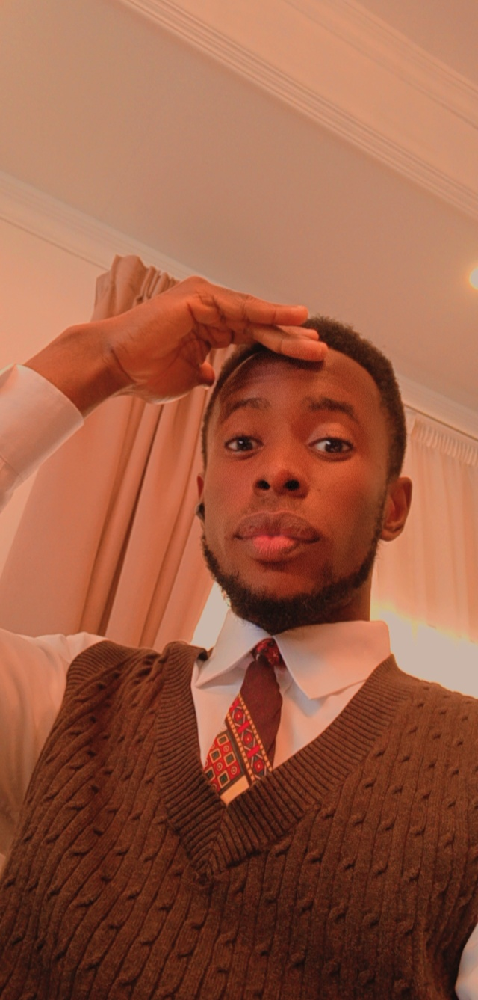

Obaroakpo Billy Niesi | WDD 130
I am currently taking a Course in Web Design Development💻🎨 as an Online student with BYU. I started enjoying coding with HTML just recently with a mobile app and its interesting. If you are interested in playing with me, let me know.
I have been a member of the church from birth. one of my favorite quotes is from Elder Jefferey R. Holland "Don’t you quit. You keep walking, you keep trying, there is help and happiness ahead. Some blessings come soon. Some come late. Some don’t come until heaven. But for those who embrace the gospel of Jesus Christ, they come. It will be alright in the end. Trust God and believe in Good Things to Come." This reassuring message is one of the reaasons i had choose to continue my education despite all odds.
-
My Favorite Temples:
- Washington D.C. Temple
- Sacramento California Temple
- Rome Italy Temple